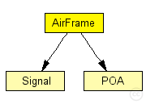

This documentation is released under the Creative Commons license
This documentation is released under the Creative Commons licenseFormat of the packets that are sent to the channel
subclass if you want to create your own AirFrame packet class (see Omnet manual, chapter Messages - Inheritance among packet classes).
This packet format is used to send a packet from the physical layer to the channel. All other physical layers that can 'hear' this packet can evaluate noise, interference etc. from the information contained in this packet (especially the signal):
Note: BasePhy layer creates AirFrames with a slightly higher priority than normal to ensure channel consistency. This means that before anything else happens at a time point t every AirFrame which ended at t has been removed and every AirFrame started at t has been added to the channel.
If you need more fields for whatever reason, please do NOT create your own packet! Just extend (subclass) this packet format
The following diagram shows usage relationships between types. Unresolved types are missing from the diagram.
The following diagram shows inheritance relationships for this type. Unresolved types are missing from the diagram.

| Name | Type | Description |
|---|---|---|
| AirFrame11p | message |
Extension of base AirFrame message to have the underMinPowerLevel field |
| Name | Type | Description |
|---|---|---|
| signal | Signal |
Contains the physical data of this AirFrame |
| poa | POA |
contains a POA object with the position, orientation and antenna (pointer) of the sender |
| duration | simtime_t |
time the AirFrames takes to be transmited (without propagation delay) |
| state | int |
state of the AirFrames, used by the physical layer as state machine for delay and transmission duration simulation |
| type | int |
If type isn't null then this is a control-AirFrame and type specifies the control type. |
| id | long |
Unique ID of the AirFrame used as identifier for related control-AirFrames |
| protocolId | int |
the id of the phy protocol of this airframe |
| channel | int |
the channel of the radio used for this transmission |
| mcs | int |
Modulation and conding scheme of the packet |
// // Format of the packets that are sent to the channel // // subclass if you want to create your own AirFrame packet class // (see Omnet manual, chapter Messages - Inheritance among packet // classes). // // This packet format is used to send a packet from the physical // layer to the channel. All other physical layers that can 'hear' // this packet can evaluate noise, interference etc. from the // information contained in this packet (especially the signal): // // Note: BasePhy layer creates AirFrames with a slightly higher // priority than normal to ensure channel consistency. This means that before anything else happens // at a time point t every AirFrame which ended at t has been removed and // every AirFrame started at t has been added to the channel. // // If you need more fields for whatever reason, please do NOT create // your own packet! Just extend (subclass) this packet format // packet AirFrame { Signal signal @getter(getConstSignal) @getterForUpdate(getSignal); // Contains the physical data of this AirFrame POA poa @getter(getConstPoa) @getterForUpdate(getPoa); // contains a POA object with the position, orientation and antenna (pointer) // of the sender simtime_t duration; // time the AirFrames takes to be transmited (without propagation delay) int state = 1; // state of the AirFrames, used by the physical layer // as state machine for delay and transmission duration // simulation int type = 0; // If type isn't null then this is a control-AirFrame // and type specifies the control type. long id; // Unique ID of the AirFrame used as identifier for // related control-AirFrames int protocolId; //the id of the phy protocol of this airframe int channel; //the channel of the radio used for this transmission int mcs; // Modulation and conding scheme of the packet }
This documentation is released under the Creative Commons license